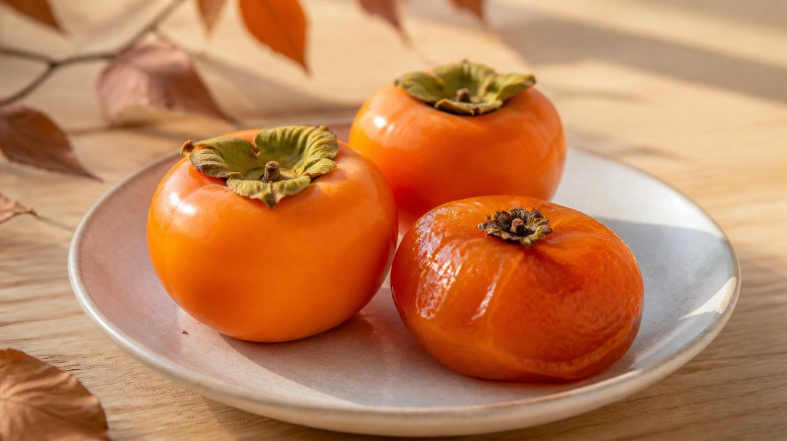
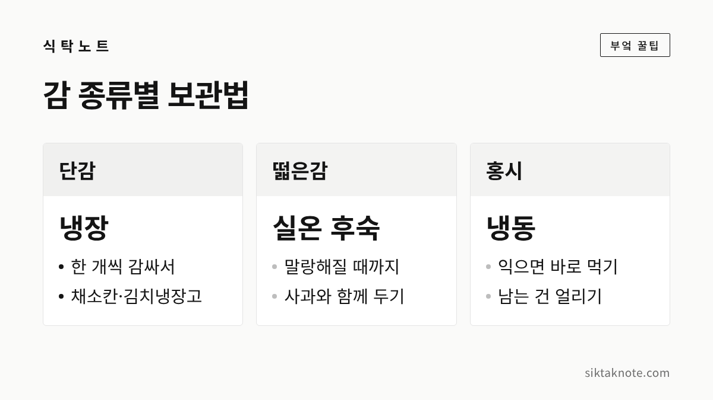

감 보관법 — 단감 냉장, 떫은감 홍시 만들기, 홍시 냉동까지

3줄 요약
- 단감은 물기 없이 한 개씩 감싸 냉장고 채소칸이나 김치냉장고에 두면 좋습니다.
- 떫은감은 실온에서 말랑하게 익혀야 떫은맛이 빠지고, 사과와 같이 두면 더 빨리 익어요.
- 다 익은 홍시는 오래 못 가니, 바로 먹지 않을 건 냉동해 두는 게 좋습니다.

가을이 되면 감이 한 상자씩 들어오는 집이 많은데요. 단감인지 떫은감인지, 얼마나 익었는지에 따라 보관하는 자리가 다릅니다. 같은 상자에 든 감이라도 하나하나 상태를 보고 나눠 두시는 게 좋습니다.
먼저 단감인지 떫은감인지 봅니다
단감은 딱딱할 때도 떫지 않아서 사각사각 깎아 먹는 감이에요. 떫은감은 대봉감처럼 단단할 때 먹으면 입안이 텁텁하게 떫은 감이고요. 떫은감은 말랑하게 익어 홍시(연시)가 되어야 떫은맛이 빠집니다.
그래서 단감은 지금의 아삭함을 오래 지키는 쪽으로, 떫은감은 잘 익히는 쪽으로 보관 방법이 갈립니다. 어떤 감인지 모르겠다면 산 곳에 물어보시는 게 가장 정확합니다.
상자째 받았다면 먼저 골라내요
- 상자를 열어 눌리거나 껍질이 터진 감, 곰팡이가 보이는 감부터 골라냅니다.
- 너무 물러진 감은 따로 빼서 먼저 먹어요.
- 감은 씻지 말고, 먹을 만큼만 그때그때 씻으세요. 물기가 남으면 그 자리부터 무르기 쉽거든요.
상한 감 하나가 옆의 감까지 무르게 만들 수 있으니, 받은 날 한 번 훑어보는 것만으로도 오래 갑니다.
단감은 차갑게 둡니다
농촌진흥청은 사과·배·포도·단감을 0도 안팎의 낮은 온도에 강한 과일로 꼽으면서, 김치냉장고에 두기 알맞다고 안내하고 있습니다. 농촌진흥청 국립원예특작과학원 자료에서도 단감을 저장하는 알맞은 온도는 0~-1℃, 습도는 90% 안팎이라고 나와 있어요. 다만 이건 농가 저장고 기준이고, 집에서는 냉장고 채소칸이나 김치냉장고에 두면 됩니다.
- 단감 겉의 물기와 흙을 마른 행주로 닦아요.
- 한 개씩 키친타월이나 신문지로 감쌉니다.
- 비닐봉지나 밀폐 용기에 담아 채소칸이나 김치냉장고에 넣어요.
한 개씩 감싸는 건 마르지 않게 하고, 감끼리 부딪혀 상처가 나는 걸 줄이려는 거예요. 냉장고에 넣어도 시간이 지나면 조금씩 말랑해지니, 단단할 때 먹고 싶다면 먼저 산 것부터 드시는 게 좋습니다.
떫은감은 실온에서 익혀요
떫은감은 냉장고에 바로 넣으면 익는 속도가 느려지는데요. 그래서 홍시로 먹으려면 서늘한 실온에 두고 말랑해질 때까지 기다리시는 게 좋습니다. 손으로 살짝 눌렀을 때 껍질 아래가 말랑하게 들어가면 다 익은 거예요.
빨리 익히고 싶을 땐 사과와 함께 두는 방법이 있습니다. 식품의약품안전처 자료에 따르면 사과는 에틸렌이라는 가스를 많이 내는 과일이고, 감은 이 가스에 민감한 과일이에요. 그래서 덜 익은 떫은감을 사과처럼 에틸렌을 많이 내는 과일과 함께 두면 더 빨리 익는다고 안내하고 있습니다. 봉지나 상자에 감과 사과 한두 개를 같이 넣어 두면 됩니다.
거꾸로 단감을 아삭하게 두고 싶다면 사과와는 떨어뜨려 두는 게 좋겠죠. 사과를 같이 보관할 땐 사과 보관법에 적어 둔 것처럼 칸을 나눠 주세요.
다 익은 홍시는 오래 못 갑니다
홍시는 익고 나면 금방 물러지고 껍질이 터지기 쉬운데요. 실온에 오래 두지 말고 며칠 안에 드시는 게 좋습니다. 바로 먹기 어렵다면 냉장고 채소칸에 넣어 무르는 속도를 조금 늦출 수 있어요. 홍시는 서로 눌리지 않게 한 겹으로 놓아 주세요. 꼭지가 아래로 가게 놓으면 덜 터진다고들 합니다.
남는 홍시는 냉동해 두세요
홍시를 오래 두려면 얼리는 방법이 가장 편합니다.
- 다 익은 홍시를 살살 씻어 물기를 완전히 닦아요.
- 한 개씩 랩이나 작은 비닐봉지에 싸서 지퍼백이나 통에 담습니다.
- 서로 눌리지 않게 놓고 냉동실에 넣어요.
- 담은 날짜를 적어 두고, 먼저 얼린 것부터 꺼내 먹습니다.
꽁꽁 언 홍시를 꺼내 잠깐 두었다가 반쯤 녹았을 때 숟가락으로 떠먹으면 셔벗처럼 시원하게 즐길 수 있어요. 겉만 먼저 녹아 물러질 수 있으니, 너무 오래 꺼내 두지는 마세요. 한 번에 먹을 만큼만 꺼내는 게 좋습니다.
이런 감은 먹지 않습니다
- 껍질이나 꼭지 둘레에 하얗거나 푸른 곰팡이가 핀 감
- 시큼한 술 냄새가 나거나 즙이 흘러 끈적한 감
- 속이 거뭇하게 변하고 맛이 이상한 감
곰팡이는 겉에 보이는 것보다 속으로 더 퍼져 있을 수 있어서, 그 부분만 도려내기보다는 버리시는 게 마음 편합니다. 같이 두었던 감도 한 번 더 살펴보세요.
자주 묻는 질문
단감도 냉동해도 되나요?
얼릴 수는 있지만, 녹이면 아삭한 식감이 사라지고 물러집니다. 단감은 냉장해서 단단할 때 먹고, 얼리는 건 홍시 쪽이 더 잘 맞아요.
떫은감을 냉장고에 넣어 두면 떫은맛이 빠지나요?
떫은맛은 감이 말랑하게 익어야 빠집니다. 냉장고에서는 익는 속도가 느려지니, 홍시로 먹을 감은 실온에서 먼저 익혀 주세요.
감은 꼭지째 보관해야 하나요?
꼭지는 억지로 떼지 말고 그대로 두는 게 좋습니다. 떼어 낸 자리로 물기가 빠지거나 상처가 나기 쉽다고 알려져 있거든요.
가을 한철 나오는 감, 종류에 맞게 나눠 두시면 겨울까지 맛있게 드실 수 있을 것 같습니다. 같은 철에 나오는 생밤 보관법도 함께 봐 두세요.